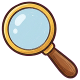
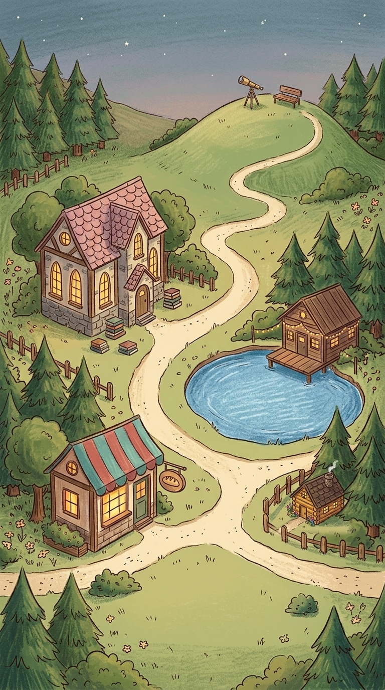

증거
×
범인 지목하기
← 옆으로 밀어서 둘러보기 →
증거 기록
‹ 증거 기록
다시 듣기
천천히
힌트
기록 완료

아직 알게 된 장소가 없어요.
범인 지목하기
지도
Note
플레이 방법
1 / 3
건너뛰기
이전
다음
사건 목록
사건
단어장
복습
내 기록
Who did it?
범인은 누구일까요?
조금 더 조사할래요
심문 시작
다시 고를래요
사건 목록으로 나갈까요?
지금까지 조사한 내용은 저장돼요.
사건 목록으로
계속 조사하기
노트 자동 채우기
전체 대화 완료
증거 모두 수집
심문 완료
튜토리얼 초기화
리셋